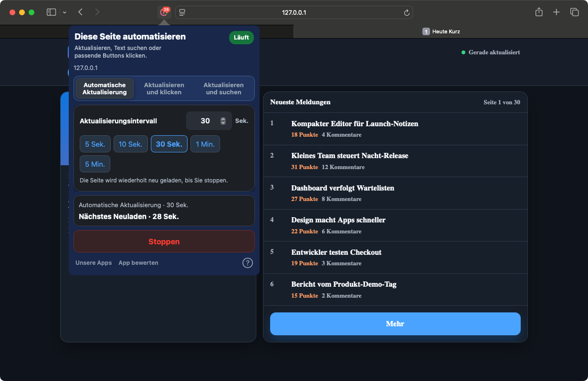
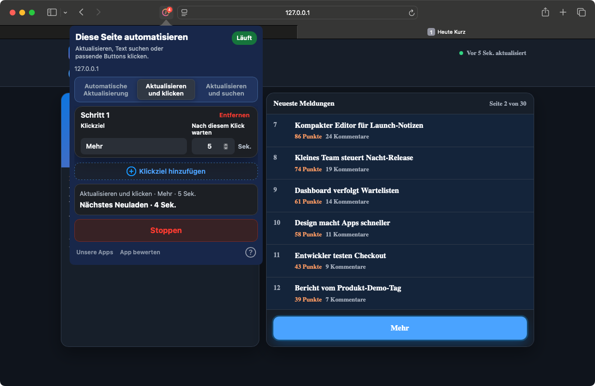
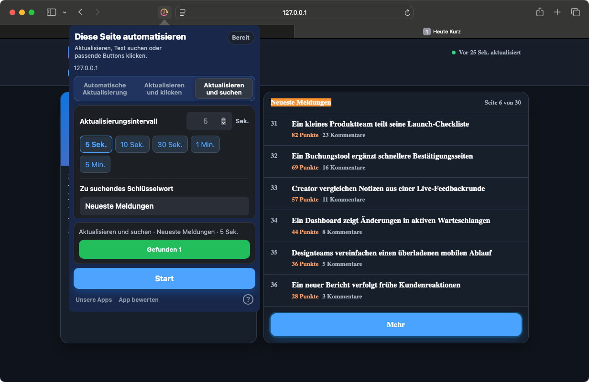

Automatisch laden
Wählen Sie ein voreingestelltes oder genaues Intervall für Dashboards, Bestände und Statusseiten.
Safari auf iPhone, iPad und Mac. Chrome auf dem Computer.
Seiten im Intervall neu laden, Schaltflächen anhand ihres Textes anklicken oder beim Fund eines Suchworts stoppen. Wiederholungen übernimmt Ihr Browser.
Im Browser. Ohne Benutzerkonto.
So funktioniert es


Safari für Mac 1.9.9 · Echte Aufnahme einer lokalen Demoseite
Vom wechselnden Dashboard bis zur wiederholten Schaltfläche: Wählen Sie die passende Aufgabe für Ihre Seite.
Wählen Sie ein voreingestelltes oder genaues Intervall für Dashboards, Bestände und Statusseiten.
Suchen Sie Schaltflächen nach Text. Fügen Sie Klickschritte mit einer Wartezeit nach jedem Schritt hinzu.
Laden Sie bis zum gesuchten Text neu. Dann stoppt das Neuladen und der Treffer wird hervorgehoben.
In wenigen Schritten eingerichtet, mit klarem Blick auf den Status.
Öffnen Sie die installierte App. Aktivieren Sie die Erweiterung in den Safari-Einstellungen und erlauben Sie den Website-Zugriff.
Öffnen Sie die Webseite und die Erweiterung. Wählen Sie Modus, Intervall und gegebenenfalls den gesuchten Text.
Starten Sie und prüfen Sie Status und Countdown. Sie können jederzeit stoppen oder Änderungen anwenden.
Kein Webkonto nötig. Die Einstellungen werden lokal gespeichert; Aufgaben werden pro Tab verwaltet.
Lassen Sie Safari auf iPhone und iPad im Vordergrund. Im Hintergrund oder bei gesperrtem Gerät kann das System Aufgaben anhalten.
DatenschutzAufgaben laufen auf Webseiten in Safari oder in der Chrome-Erweiterung auf dem Computer. Andere Apps und Systemoberflächen werden nicht gesteuert.
Öffnen Sie die installierte App einmal und prüfen Sie Safari-Einstellungen → Erweiterungen. Manifest V3 benötigt Safari 15.4 oder neuer. Fehlt sie weiterhin, senden Sie dem Support die macOS-, Safari- und App-Version sowie die Installationsquelle.
Ein durchgehender Hintergrundbetrieb ist nicht garantiert. iOS und iPadOS können Browseraufgaben anhalten. Lassen Sie Safari im Vordergrund.
In der aktuellen Safari-Version können Sie Einstellungen bearbeiten und Änderungen anwenden. Die Zusammenfassung zeigt die aktive Aufgabe. Mit Stoppen beenden Sie sie.
Safari auf iPhone, iPad und Mac. Chrome auf dem Computer.
Aktuelle Preise und Kompatibilität finden Sie im jeweiligen Store.